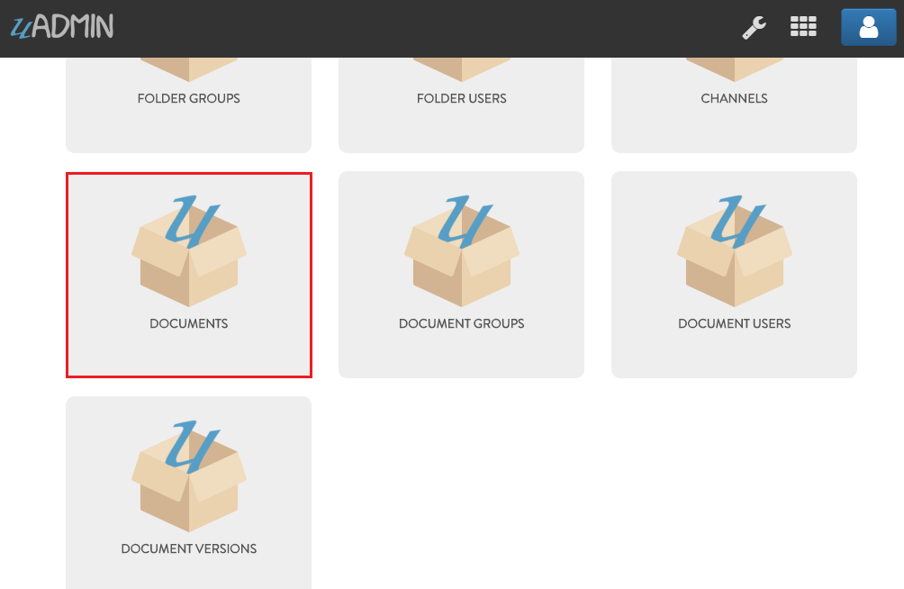
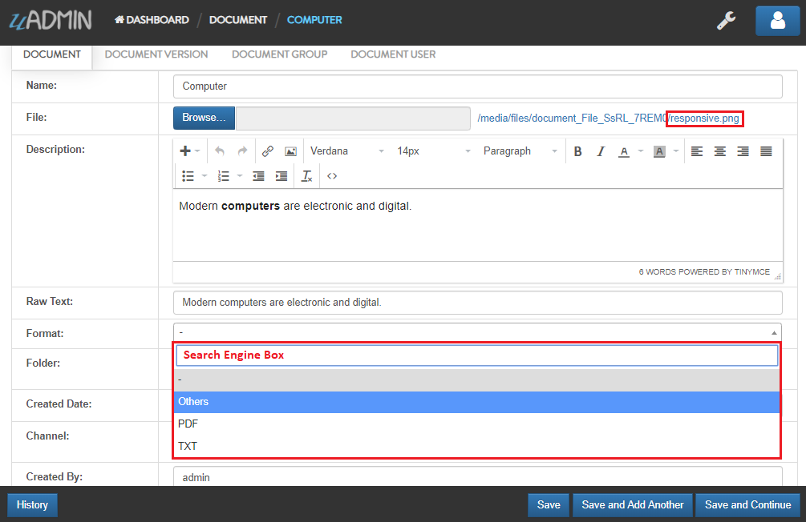

Document System Tutorial Part 8 - Drop Down List in a Separate Library¶
In this part, we will discuss about creating a separate library that contains a drop down list.
Let’s create a new file as a separate library in the models folder named “format.go” with the following codes below:
package models
// Format is the name of the drop down list ...
type Format int
// PDF is the name of the drop down list value ...
func (Format) PDF() Format {
return 1
}
// TXT is the name of the drop down list value ...
func (Format) TXT() Format {
return 2
}
// Others is the name of the drop down list value ...
func (Format) Others() Format {
return 3
}
The return values 1 and 2 are the ID of the drop down list values.
Format is essential if you want to specify the extension of the file that you have uploaded in your application.
Now let’s import our created library to document.go and document_version.go and set the tag as “list_exclude” that hides the field or column name in the model structure.
document.go
// Document !
type Document struct {
uadmin.Model
Name string
File string `uadmin:"file"`
Description string `uadmin:"html"`
RawText string `uadmin:"list_exclude"`
Format Format `uadmin:"list_exclude"` // <-- place it here
Folder Folder `uadmin:"filter"`
FolderID uint
CreatedDate time.Time
Channel Channel `uadmin:"list_exclude"`
ChannelID uint
CreatedBy string
}
** document_version.go**
// DocumentVersion !
type DocumentVersion struct {
uadmin.Model
Document Document
DocumentID uint
File string `uadmin:"file"`
Number int `uadmin:"help:version number"`
Date time.Time
Format Format // <-- place it here
}
As you can see, there is no FormatID field because Format is a not a model. It is a drop down list. Format is placed in the models folder because we are importing this drop down list in the Document and DocumentVersion models.
Now let’s run your application. Go to Document System Dashboard then open “DOCUMENTS”.
Click the existing record that you have.

As you notice, the Format field is a drop down list that contains three values: PDF, TXT, and Others. In fact that our file is named “responsive” with PNG file extension, let’s choose “Others” in the Format field. Click Save button afterwards.
Go back to Document System Dashboard then open “DOCUMENT VERSIONS”.

Click the existing record that you have.

As you notice, the Format field is a drop down list that contains three values: PDF, TXT, and Others. In fact that our file is named “responsive” with PNG file extension, let’s choose “Others” in the Format field.

Result

In the next part, we will talk about updating the document version automatically if the file has changed by the user after saving the specific document in the model.